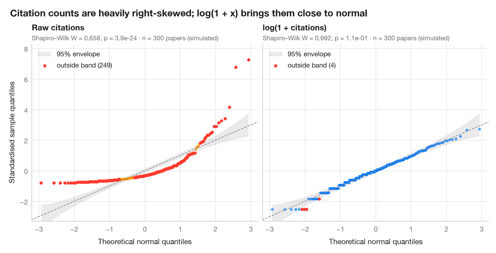

带置信带的 Q–Q 图
带 95% 包络带的正态 Q–Q 图，分别展示原始变量与对数变换后的变量。

分位数–分位数图将排序并标准化后的数据与正态分布对应的理论分位数相对照。正态数据落在对角线上；弯曲的香蕉形模式则意味着偏态。阴影带是基于正态次序统计量的 Beta 分布构建的 95% 逐点包络，落在其外的点比随机波动所能解释的更为极端。
本例的背景是 Warin（2021，JMIR Medical Informatics）基于元数据对全球冠状病毒研究所做的分析。此处的数字为说明而模拟——n = 300 篇冠状病毒论文的被引次数，按围绕对数正态均值的泊松计数生成——并非论文的数据或结果。左图为原始被引次数，右图为用 numpy.log1p 计算的 log(1 + 被引次数)。分位数来自 scipy.stats.norm.ppf，包络来自 scipy.stats.beta.ppf，每个子图报告一次 Shapiro–Wilk 检验。
代码及图中文字均为英文。
import matplotlib.pyplot as plt
import numpy as np
from scipy import stats
# Simulated data, set in the context of Warin (2021) [warin2021corona]
# Data: citations per paper, raw and log(1 + x)
rng = np.random.default_rng(2021)
citations = rng.poisson(rng.lognormal(2.5, 1.0, 300))
samples = {"Raw citations": citations, "log(1 + citations)": np.log1p(citations)}
palette = ["#FF9500", "#007AFF"]
fig, axes = plt.subplots(1, 2, figsize=(10, 5), sharex=True, sharey=True)
for ax, (name, x), c in zip(axes, samples.items(), palette):
n = len(x)
z = np.sort((x - x.mean()) / x.std(ddof=1)) # standardised sample quantiles
pp = (np.arange(1, n + 1) - 0.5) / n # plotting positions
theo = stats.norm.ppf(pp) # theoretical normal quantiles
# 95% pointwise envelope: order statistic i of a uniform sample is Beta(i, n-i+1)
i = np.arange(1, n + 1)
lo = stats.norm.ppf(stats.beta.ppf(0.025, i, n - i + 1))
hi = stats.norm.ppf(stats.beta.ppf(0.975, i, n - i + 1))
outside = (z < lo) | (z > hi)
ax.fill_between(theo, lo, hi, color="#8E8E93", alpha=0.18, lw=0, label="95% envelope")
ax.plot([-3.5, 3.5], [-3.5, 3.5], color="#8E8E93", lw=1, ls="--")
ax.scatter(theo[~outside], z[~outside], s=16, color=c, alpha=0.7, lw=0)
ax.scatter(theo[outside], z[outside], s=22, color="#FF3B30", lw=0,
label=f"outside band ({outside.sum()})")
W, p = stats.shapiro(x)
ax.set_title(name, pad=20, fontsize=12)
ax.text(0, 1.02, f"Shapiro–Wilk W = {W:.3f}, p = {p:.1e} · n = {n} papers (simulated)",
transform=ax.transAxes, fontsize=9.5, color="#6E6E73")
ax.legend(loc="upper left")
ax.grid(axis="x")
ax.set_xlabel("Theoretical normal quantiles")
axes[0].set_ylabel("Standardised sample quantiles")
axes[0].set_xlim(-3.2, 3.2)
axes[0].set_ylim(-3.3, 8.3) # room for the most-cited papers
fig.suptitle("Citation counts are heavily right-skewed; log(1 + x) brings them close to normal",
x=0.01, ha="left", fontsize=14)
plt.show()
图表使用了可选的 PyStatlas 样式：添加 plt.style.use("pystatlas.mplstyle") 即可完全还原其外观。
数据来源
- Simulated data. Simulated data with a fixed random seed, created for this example.
No real respondents, documents or measurements: the numbers only illustrate how the chart and its statistics work. - Warin (2021), global research on coronaviruses. Warin, T. (2021). Global research on coronaviruses: Metadata-based analysis for public health policies. JMIR Medical Informatics, 9(11), e31510. https://doi.org/10.2196/31510
The example is set in the context of this paper; unless its description says otherwise, the numbers are simulated and are not the paper's data or results.
这些示例用于说明统计方法。除条目另有说明外，其数值均为模拟数据，图表标题描述的是该图在这些模拟数据中呈现的内容——既不是所引论文的结论，也不是作者对实质问题的立场。关于结果、背景和数据，请以此处引用的论文为准。
如何引用
PyStatlas 由 Thierry Warin 创建并维护。如果它对你的工作有所帮助，敬请引用。
Warin, T. (2026). Q–Q plot with confidence band. In PyStatlas: A Python Gallery of Statistical Graphics for the Social Sciences (Version 1.1.0) [Computer software]. https://warint.github.io/pystatlas/distributions/qq-plot/
@misc{warin2026statlas,
author = {Warin, Thierry},
title = {PyStatlas: A Python Gallery of Statistical Graphics for the Social Sciences},
year = {2026},
version = {1.1.0},
howpublished = {\url{https://warint.github.io/pystatlas/}},
note = {Source code: https://github.com/warint/pystatlas}
}